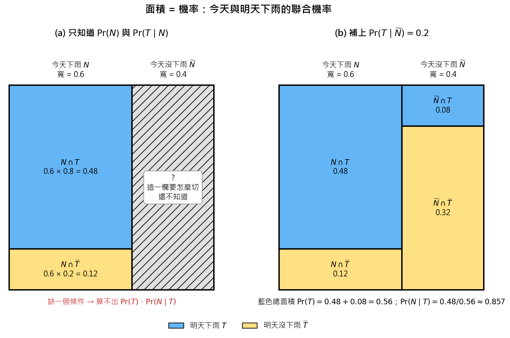

Conditional Probability and Bayes』 Theorem in Weather Prediction (條件機率與貝氏定理：由「今天下雨」推估「明天下雨」)#
1. Background (背景描述)#
「今天下雨」與「明天下雨」通常不是獨立事件。
大尺度天氣系統（例如副熱帶高壓、鋒面、颱風）往往會滯留或影響同一地區約 3～10 天，這段時間可視為大氣的「記憶尺度」。因此天氣狀態具有持續性（persistence）：
晴天延續：今天受副熱帶高壓籠罩而沒有下雨，高壓不會在一夜之間消失，明天很可能仍然不下雨。
雨天延續：今天因颱風接近而下雨，明天颱風可能正好通過，下雨的可能性更高。
換句話說，知道「今天有沒有下雨」，已經提供了關於「明天會不會下雨」的部分資訊。這正是條件機率 \(\Pr(T \mid N)\) 要描述的事情：在已知今天天氣的條件下，更新我們對明天天氣的判斷。
2. Rule 101 (問題設定)#
事件定義#
符號 |
意義 |
|---|---|
\(N\) |
今天（Now）下雨 |
\(\widetilde{N}\) |
今天沒下雨（\(N\) 的補集） |
\(T\) |
明天（Tomorrow）下雨 |
\(\widetilde{T}\) |
明天沒下雨（\(T\) 的補集） |
已知條件#
天氣預報說今天下雨的機率為 \(0.6\)：
根據經驗，若今天下雨，明天也下雨的機率為 \(80\%\)：
所求#
今天和明天都下雨的機率 \(\Pr(N \cap T)\)。
3. Solution: Multiplication Rule (求解：乘法規則)#
由條件機率的定義 \(\Pr(T \mid N) = \dfrac{\Pr(T \cap N)}{\Pr(N)}\)，移項即得乘法規則：
結論：已知今天下雨機率為 \(0.6\)、今天下雨則明天下雨的經驗機率為 \(0.8\)，則兩天都下雨的機率為 \(0.48\)。
4. Review (復盤)#
4.1 目前已經可以推得的#
機率 |
公式 |
數值 |
|---|---|---|
今天沒下雨 |
\(\Pr(\widetilde{N}) = 1 - \Pr(N)\) |
\(1 - 0.6 = 0.4\) |
今天下雨時，明天沒下雨 |
\(\Pr(\widetilde{T} \mid N) = 1 - \Pr(T \mid N)\) |
\(1 - 0.8 = 0.2\) |
今天下雨且明天下雨 |
\(\Pr(N \cap T) = \Pr(T \mid N)\Pr(N)\) |
\(0.8 \times 0.6 = 0.48\) |
今天下雨且明天沒下雨 |
\(\Pr(N \cap \widetilde{T}) = \Pr(\widetilde{T} \mid N)\Pr(N)\) |
\(0.2 \times 0.6 = 0.12\) |
檢查：\(\Pr(N \cap T) + \Pr(N \cap \widetilde{T}) = 0.48 + 0.12 = 0.6 = \Pr(N)\) ✔
4.2 目前還無法推得的#
明天下雨的機率 \(\Pr(T)\)
今天沒下雨且明天下雨 \(\Pr(\widetilde{N} \cap T)\)
今天沒下雨且明天沒下雨 \(\Pr(\widetilde{N} \cap \widetilde{T})\)
已知明天下雨，「今天其實有下雨」的後驗機率 \(\Pr(N \mid T)\)
原因：兩天的天氣共有 4 種組合，可以寫成一張 \(2 \times 2\) 的聯合機率表。4 格加總為 \(1\)，所以有 3 個自由度，但目前只有 \(\Pr(N)\) 與 \(\Pr(T \mid N)\) 兩個條件，只能確定「今天下雨」那一列，「今天沒下雨」那一列的 \(0.4\) 要如何分配到明天下雨／不下雨，完全不知道：
明天下雨 \(T\) |
明天沒下雨 \(\widetilde{T}\) |
合計 |
|
|---|---|---|---|
今天下雨 \(N\) |
\(0.48\) |
\(0.12\) |
\(0.6\) |
今天沒下雨 \(\widetilde{N}\) |
? |
? |
\(0.4\) |
合計 |
? |
? |
\(1\) |
關於 \(\Pr(N \mid T)\) 與 \(\Pr(N)\) 的關係
由貝氏定理：
\[\Pr(N \mid T) = \frac{\Pr(T \mid N)\Pr(N)}{\Pr(T)}\]所以 \(\dfrac{\Pr(N \mid T)}{\Pr(N)} = \dfrac{\Pr(T \mid N)}{\Pr(T)}\)。只有在 \(N\) 與 \(T\) 獨立（\(\Pr(T \mid N) = \Pr(T)\)）時，才會有 \(\Pr(N \mid T) = \Pr(N)\)。 要算出後驗機率 \(\Pr(N \mid T)\)，關鍵是分母 \(\Pr(T)\)，而它需要「今天沒下雨」那一列的資訊才能求得。
4.3 補上一個條件後可以多推得的#
只要再多給任何一個與「今天沒下雨」那一列有關的條件，表格就能完全填滿。以下三種情況使用一組互相一致的數字，最後都得到同一張表。
情況 1：多知道「今天沒下雨時，明天下雨」的經驗機率#
假設 \(\Pr(T \mid \widetilde{N}) = 0.2\)（晴天延續，所以明天下雨機率低）。
今天沒下雨且明天下雨（乘法規則）：
今天沒下雨且明天沒下雨：
明天下雨的機率（全機率公式）：
貝氏定理反推：已知明天下雨，今天其實有下雨的後驗機率：
後驗機率 \(0.857\) 大於先驗機率 \(\Pr(N) = 0.6\)：知道明天下雨後，我們更相信今天也有下雨，這正是天氣持續性的反映。
情況 2：多知道「明天下雨的總機率」#
有時氣象局會分別發布今天與明天的降雨機率預報。假設 \(\Pr(T) = 0.56\)。
注意：這裡是「兩天各自有一個預報值」，不代表兩天的天氣是獨立事件。
今天沒下雨且明天下雨（由全機率公式移項）：
今天沒下雨時，明天下雨的條件機率：
今天沒下雨且明天沒下雨：
貝氏定理後驗機率同情況 1：\(\Pr(N \mid T) = \dfrac{0.48}{0.56} \approx 0.857\)
合理性限制：因為 \(0 \le \Pr(\widetilde{N} \cap T) \le \Pr(\widetilde{N})\)，給定的 \(\Pr(T)\) 必須落在
\[0.48 \le \Pr(T) \le 0.48 + 0.4 = 0.88\]否則預報數字彼此矛盾。
情況 3：多知道「今天和明天都沒下雨」的機率（交集）#
假設 \(\Pr(\widetilde{N} \cap \widetilde{T}) = 0.32\)。
今天沒下雨時，明天也沒下雨的條件機率：
今天沒下雨且明天下雨：
明天下雨與明天沒下雨的機率：
已知明天沒下雨，今天也沒下雨的後驗機率：
4.4 完整的聯合機率表#
三種情況最後都填出同一張表。用「面積 = 機率」畫出來：欄寬是今天的機率，欄內高度是明天的條件機率。

明天下雨 \(T\) |
明天沒下雨 \(\widetilde{T}\) |
合計 |
|
|---|---|---|---|
今天下雨 \(N\) |
\(0.48\) |
\(0.12\) |
\(0.60\) |
今天沒下雨 \(\widetilde{N}\) |
\(0.08\) |
\(0.32\) |
\(0.40\) |
合計 |
\(0.56\) |
\(0.44\) |
\(1.00\) |
驗證「今天與明天不獨立」：若兩者獨立，應有 \(\Pr(T \mid N) = \Pr(T)\)，但
或等價地 \(\Pr(N \cap T) = 0.48 \neq \Pr(N)\Pr(T) = 0.6 \times 0.56 = 0.336\)。這與背景描述中「大氣記憶造成天氣持續性」一致。
5. Formula Summary (公式整理)#
名稱 |
公式 |
本題用途 |
|---|---|---|
補集 |
\(\Pr(\widetilde{A}) = 1 - \Pr(A)\) |
今天沒下雨、條件下的「沒下雨」 |
條件機率定義 |
\(\Pr(A \mid B) = \dfrac{\Pr(A \cap B)}{\Pr(B)}\) |
由交集反推條件機率（情況 2、3） |
乘法規則 |
\(\Pr(A \cap B) = \Pr(A \mid B)\Pr(B)\) |
兩天都下雨 \(\Pr(N \cap T)\) |
全機率公式 |
\(\Pr(T) = \Pr(T \mid N)\Pr(N) + \Pr(T \mid \widetilde{N})\Pr(\widetilde{N})\) |
明天下雨的總機率（情況 1） |
貝氏定理 |
\(\Pr(N \mid T) = \dfrac{\Pr(T \mid N)\Pr(N)}{\Pr(T)}\) |
已知明天下雨，反推今天下雨 |
獨立性判斷 |
\(\Pr(N \cap T) = \Pr(N)\Pr(T) \iff \Pr(T \mid N) = \Pr(T)\) |
驗證兩天天氣是否相關 |